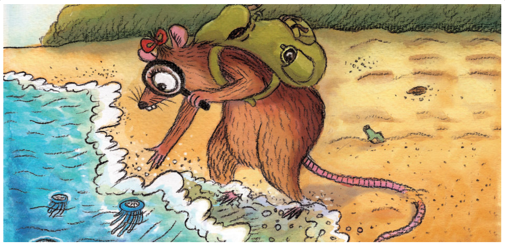
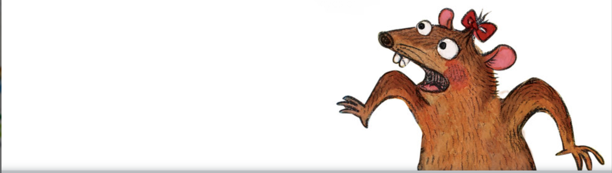
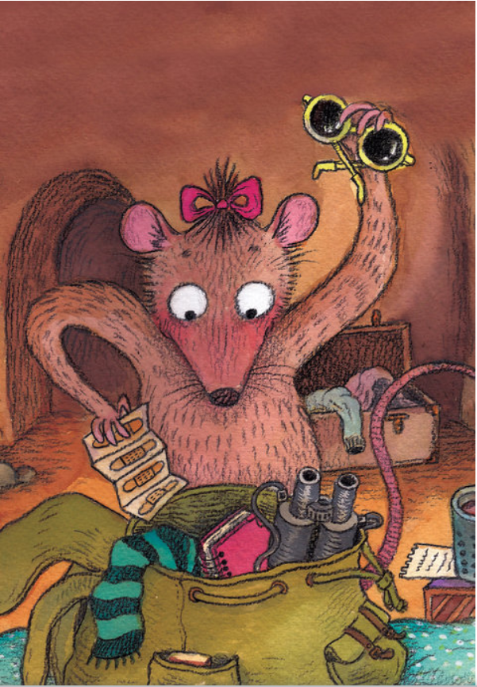

Miss Bandicota Bengalensis Digs Up the Seashore
Miss Bandicota Bengalensis Digs Up the Seashore
Click on the play button to play a Law my story music:
Miss Bandicota Bengalensis was not just any little Indian mole rat. She had magical eyes like no other mole rat and she wanted to see everything. Every night, she packed her explorer's kit: her sunglasses, binoculars, magnifying glass and of course, her favourite – a strip of sticker bandages. “An explorer is always prepared,” she said. Every time she dug in a new direction and returned through a new burrow! This time our unlikely explorer has surfaced near the sea. Enjoy a walk along the beach with her as she befriends a host of strange creatures.
Miss Bandicota Bengalesis was a little Indian mole rat who grew up in a maze of burrows with her mother, seven sisters and ten brothers. They were terrific pests. The nineteen of them, always out on a rampage.
One night she was foraging as usual, when suddenly, she heard an angry human voice. Quick and nimble, she just managed to escape from a farmer's scary grassp.
As she was fleeing, she looked into the eyes of the mole rat stuck in the trap. Those were the saddest eyes she had ever seen.
|  |
She was so terrified that huddled in her mother' burrow all night, her eyes tight shut. In the early hoursof twilight she announced to everybody's dismay that she would never attack a farm again. All her brothers and sisters tried to change her mind, but she would not budge. She soon became bored and restless and realised the she couldn't sit in the same old burrow any longer. She quitely packed her explorer's kit with her Sunglasses, Binoculars, Magnifying glass and, of course, her favorite - a Strip of Sticker Bandages. She Build up her confidence and left that place. ther began her journey to the new life. |
And her Story as always begins with her own decisions.
She has done amazing things,
she made good friends,
with them she enjoyed her life with different kinds of friends and adventurous life. At the end to be Continued.......
Please note this these video is uploaded just for a practice purose. The content of this video doesn't relates to me.
Thank You😄.